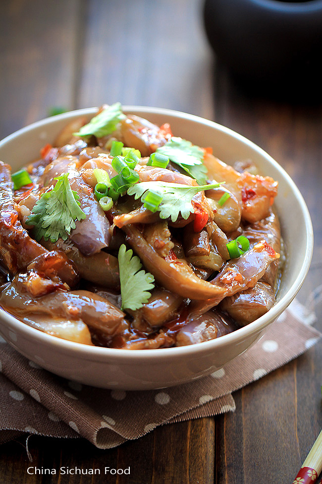
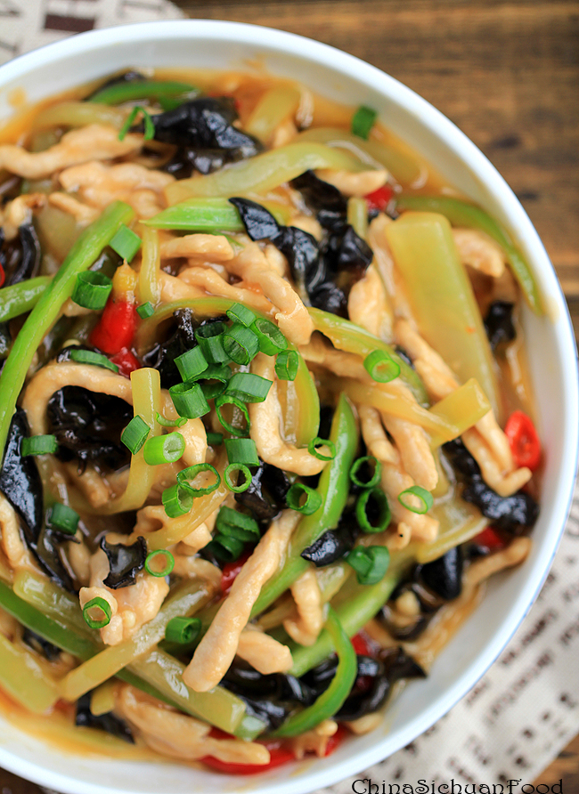
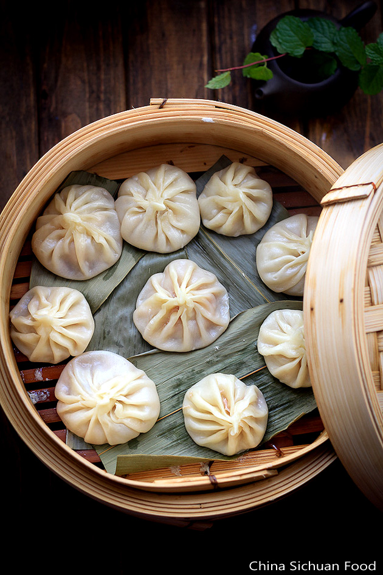
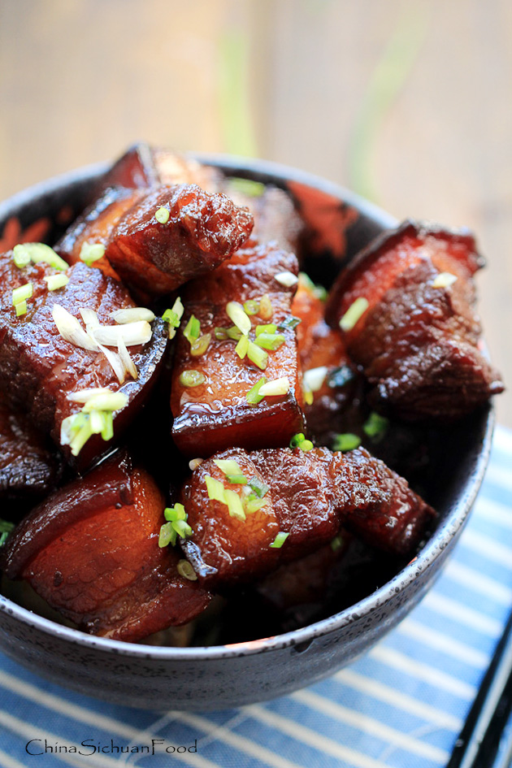
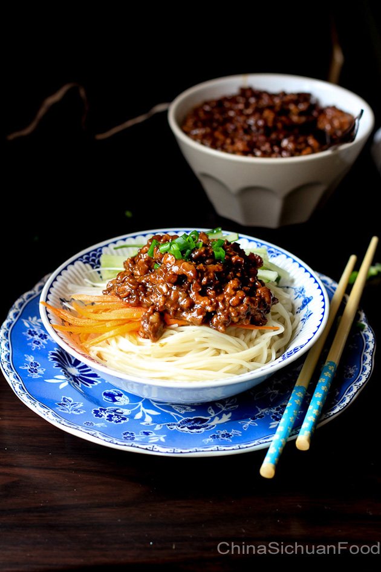
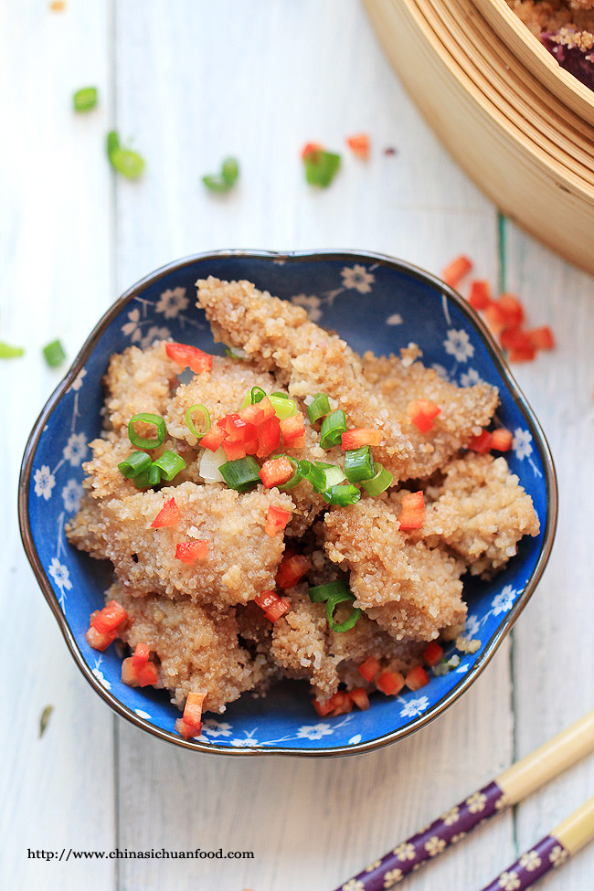

One of the representatives of Sichuan cuisine is Sichuan eggplant, or Yu Xiang Qie Zi (in Chinese). "Yu Xiang" actually means Fish-Fragrant, is a kind of flavor which is quite famous in Sichuan dishes. Besides Sichuan eggplant, there is the famous Yu Xiang Rou Si(fish-fragrant shredded pork). Some menu may refer this dish to Eggplants in Chinese hot garlic sauce. This unique fish fragrant sauce is made with pickled red pepper, garlic, ginger, scallions, salt, soy sauce and vinegar. It is firstly used to cook fishes. So this dish has nothing to do with fish meat. The best pepper used should be Sichuan pickled red pepper. I have written a recipe about how to make it at home, if you are interested about this, please check pickled vegetables. Or if the pickled red pepper is really hard to find, you can replace it with Thai red pepper. Although Sichuan peppercorn is commonly used in many Sichuan dishes, we do not need it for the fish fragrant series. I see many versions call for Sichuan peppercorn in this recipe. However, you may develop your own recipe and just enjoy the process of cooking.

The dish is featured by the taste-fish fragrant. In fact, the sauce used in this shredded pork stir-fry recipe is known as Chinese garlic sauce on many menu of Chinese restaurants offering Sichuan dishes. Then you may wonder what’s the special fish-fragrant sauce? Does it come from the fish? The fish-fragrant sauce in fact does not come from fish. Then why it gets the name as Fish-fragrant? There are two reasons; firstly the sauce is firstly used to cook fish in common Sichuan people’s cooking time and the second should be the fish similar smell.

It is not easy to make this little, juicy and yummy soup dumplings at home. Soup dumping usually is featured by its juicy soup filling. There are two different varieties of the pork filling. Some use pork rind jelly while the other one use stock directly. For beginners, pork rind jelly version is much easier since it would be easy to assemble to soup dumplings.
Read more at http://www.chinasichuanfood.com/xiao-long-bao-soup-dumplings

Sushi style Hong shao Rou—Su style red braised pork belly. Hong shao or red-braising or red-cooking, is methods of cooking meats or vegetables with soy sauce, sugar and sometimes other spices. I have introduced Maoshi red braised pork belly previously and this style is mild Sushi without chili and spices.
Read more at http://www.chinasichuanfood.com/hong-shao-rou-red-braised-pork-belly

Minced Pork Noodles—Zha jiang mian is a famous noodle dish across the country. However, you may see many restaurants offer it as Beijing style Zhajiangmian on their menu. But its territory is far beyond Beijing.
Read more at http://www.chinasichuanfood.com/zha-jiang-mian-minced-pork-noodles

Chinese style Steamed pork with homemade rice flour known as FenzhengRou in Chinese; This is a very famous and popular dish in China but I guess it is unknown to most of non-Chinese. I really feel that I need to introduce this dish from starch.
Steamed pork, beef or ribs with rice flour are grouped as Fenzheng Rou. If you have a bamboo steamer or electric rice cooker at home, this is the recipe for you.
Read more at http://www.chinasichuanfood.com/fenzhengrousteamed-pork-with-rice-flour